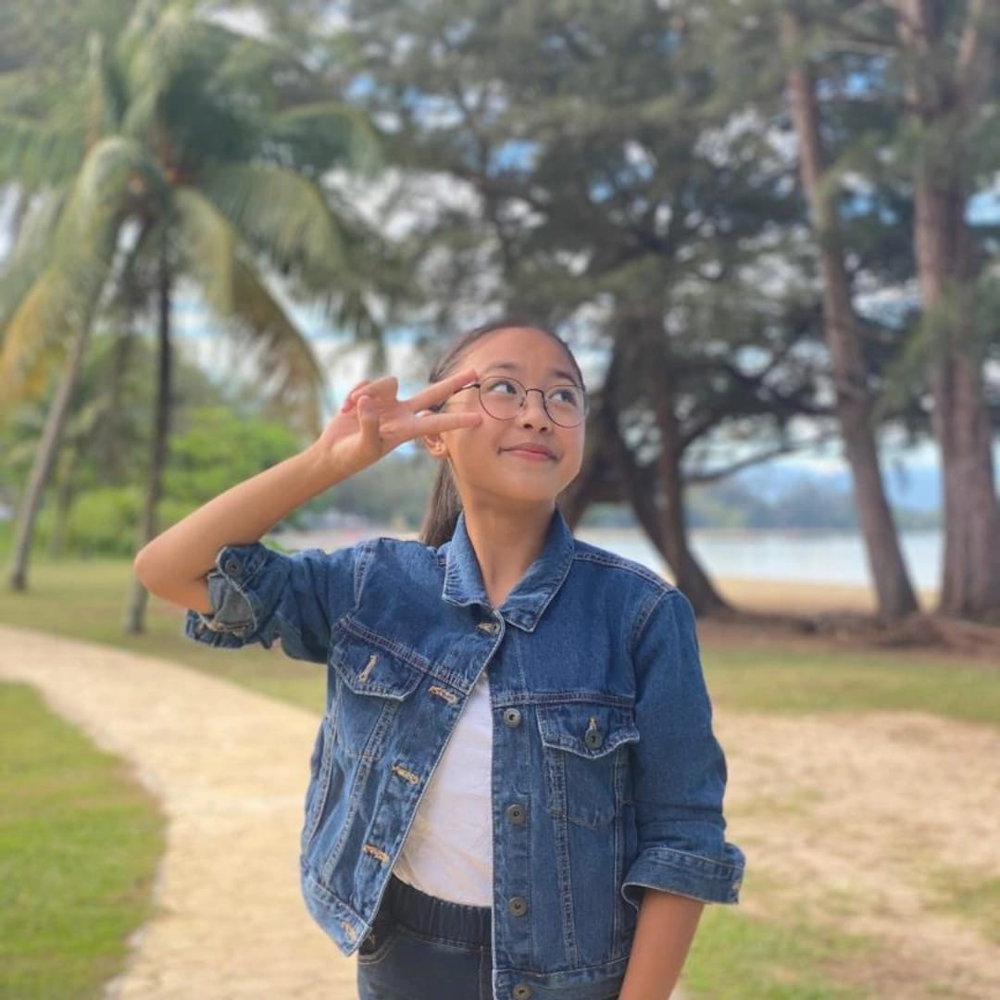
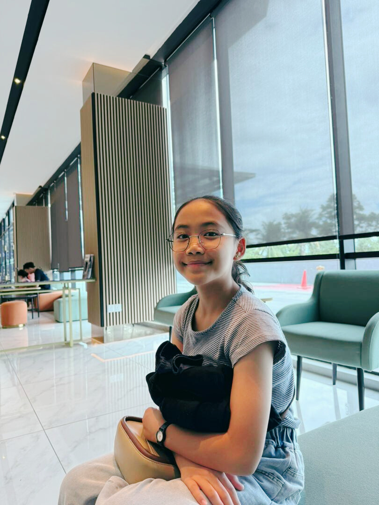

Ian Martin Idang "The Father"
He is the main provider of the family. An inspiring father. His birthday is on 12 August 1987. He seems friendly. But do not let his appearance deceive you. He's strict but cool and funny. He used to have hair but he gave up on them. He needs to read that webtoon I recommended to him.
More info
Billery Allerian Ian Martin "The Oldest Child"
This is the eldest child. She's smart but dumb, dumb but smart. Her birthday is on 13 October 2006. She loves frogs and the color green. She is a curious plebian who loves learning. She prefers using glasses over contact lens because she thinks she will look smart with them (she's delusional and lowkey blind by the way).
More info
Whitney Allerian Ian Martin "The Middle Child #1"
This is the child that will not read any of the webtoons I recommended to her. Her birthday is on 14 May 2008. I still love her though. She likes dancing and singing with her buddy, Zoe. She's now the oldest one back in Malaysia, taking over my place. Bless her soul. She's obsessed with Genshin Impact and gambling with her wishes.
More info

Zoe Lana Allerian Ian Martin "The Middle Child #3
This girl really loves sideyeing people, which is so hilarious. She is also sassy and funny. Her birthday is on 10 October 2010. She loves crocheting. I should ask her to crochet a frog for me. Wouldn't that be nice. The first baby I took care of.
More info

Kanisha Leilani Allerian Ian Martin "The Middle Child #4
This girl makes the most funniest faces. She is funny but serious at the same time. She is also an overachiever. Her birthday is on 2 February 2014. I asked her to send me a nice picture of her and she sent me a pic of herself with her trophy, saying that's the only personal picture of herself that she has. The second baby I took care of.
More info
Brieanna Allerian Ian Martin "The Middle Child #5"
Whenever I videocall this sister of mines, she is always playimg with the filters to make herself look diabolical. Her birthday is on 13 January 2016. She cries a lot so I always love teasing her especially when she makes her signature angry face. She is fast at counting at quite a younge age. The third baby I took care of.
More info
Meaghan Allerian Ian Martin "The Youngest Child"
The last baby I took care of. Her birthday is on 10 January 2020. She is so adorable. She is such a mature baby. At church, usually, many children could be seen running or playing around but this baby is just sitting at her place reverantly! Gahhhh so cutee! I also noticed that she has some leadership qualities.
More info